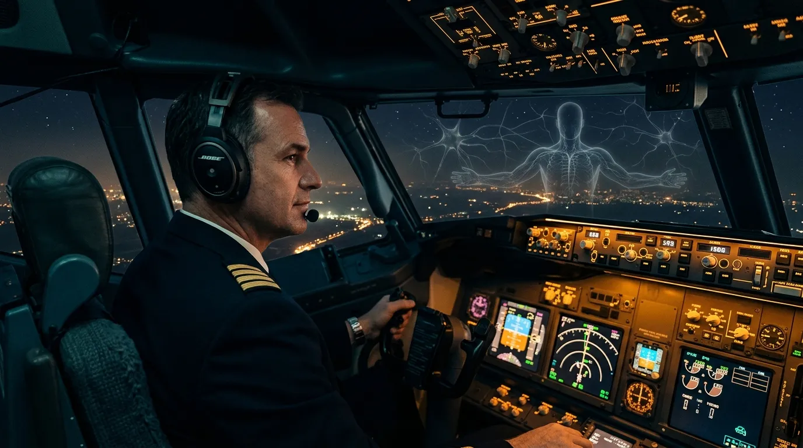
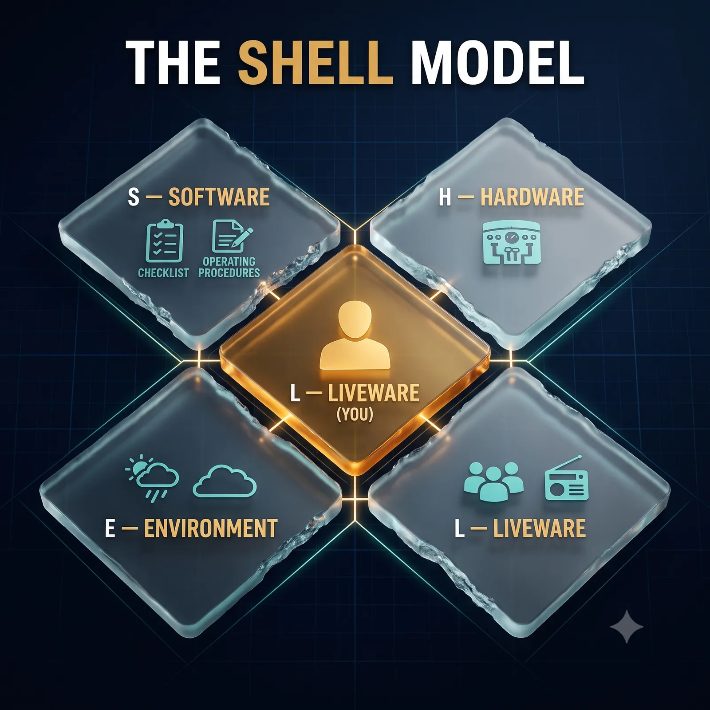
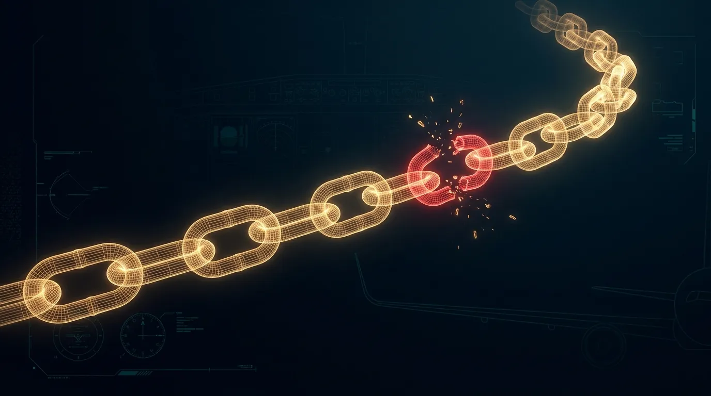

Human Performance & Limitations · Module 0 — The Threshold
The Human Factor
Chapter 1 — Every other subject teaches you the machine. This one teaches you the pilot flying it: the one component that cannot be re-certified, swapped out, or rebooted at altitude.
BookHuman Performance & Limitations
AuthorCapt. Pankaj Pahil
ExamDGCA CPL / ATPL — HPL
Chapter1 of 26 · Module 0
Why this subject keeps you alive
In modern aviation the aircraft rarely fails — the human does. Roughly three out of every four accidents trace back not to metal, but to a human limitation that was understood in a textbook and forgotten in a cockpit. Human Performance & Limitations is the study of that gap between what a pilot's body and mind can do and what the flight demands of them. Close it, and you become the safest system on the aircraft.

CINEMATIC PLATE 1.0 — pending generation (Banana Pro)
Prompt Fig 1.4 in the Cinematic Diagram Prompts sheet.
Plate 1.0 — The last line of defence. When the reports are read, it is almost never the wing or the radio that is named — it is the pilot.
1What Human Performance & Limitations Is
Human Performance & Limitations (HPL) is the applied study of human behaviour, physiology and psychology as they relate to the operation of an aircraft, and of how those human factors influence the safety and efficiency of flight. It takes the tools of medicine and psychology into the cockpit for one reason only: to understand the pilot well enough to keep the pilot alive.
The aim of the subject is to understand and predict the behaviour of a person in the aviation environment, so that we can improve safety, efficiency and comfort. A practitioner works through four actions — fix them in memory now, because the whole subject is built on them.
Exam Tip — the four action verbs
The four things HPL sets out to do with human behaviour: D – P – U – I → Describe, Predict, Understand, Influence. If a question asks what aviation psychology aims to do, the answer lives in those four verbs.
2Why the Human Fails
Start from an uncomfortable truth the examiner expects you to state plainly: human error is inevitable. It is not the mark of a bad pilot; it is a property of being human. The professional's task is therefore not to never err — that is impossible — but to reduce the frequency of error, and to trap and mitigate the errors that do occur before they reach the ground.
Most pilot-related errors are not failures of stick-and-rudder skill. They are failures in four areas: interpersonal skills, communication, decision-making, and leadership.
CINEMATIC DIAGRAM 1.1 — pending generation (Banana Pro)
Prompt Fig 1.2 (Origins of Pilot Error) in the Cinematic Diagram Prompts sheet.
Figure 1.1 — The four origins of pilot error, all trapped by one thing: superior judgment.
Golden Maxim"A superior pilot uses his superior judgment to avoid situations that would require his superior skill."
3The SHELL Model — Where the Pilot Meets the System
No pilot flies in isolation. You sit at the centre of a system, connected to the machine, the paperwork, the world outside, and the other people in the loop. The SHELL model is the standard way of picturing those connections. Its central insight: accidents rarely happen inside a component — they happen at the joints between them, where the human interface is imperfect.

CINEMATIC DIAGRAM 1.2 — pending labelled version (Banana Pro)
Prompt Fig 1.1 (SHELL Model — regenerate WITH labels).
Figure 1.2 — The SHELL model. Liveware (you) sits at the centre; the ragged edges show the imperfect fit of every human interface.
The four SHELL interfaces — what sits at each joint with the pilot
Interface
What it is
Where it bites in the cockpit
Liveware – Software
The pilot and the non-physical system: procedures, checklists, SOPs, symbology, charts.
A confusing checklist, an ambiguous chart symbol, a badly worded procedure.
Liveware – Hardware
The pilot and the machine: controls, displays, seats, switches.
A switch shaped like its neighbour; a display read wrong in a hurry.
Liveware – Environment
The pilot and the world, inside and out: weather, cabin altitude, noise, heat, plus the organisation's rules and pressures.
Glare, hypoxia, time pressure from the schedule.
Liveware – Liveware
The pilot and other people: the other crew member, ATC, cabin crew, engineers.
A missed read-back; an authority gradient too steep to question the Captain.
Exam Tip — the centre block
The component at the centre of the SHELL model is Liveware — the human being. It is drawn with ragged edges because humans are the least standardised part of the system. Every other block must be shaped to fit the human, not the other way round.
4The Dirty Dozen — Twelve Ways the Trap Is Set
If the SHELL model shows you where error lives, the Dirty Dozen shows you how it is invited in — the twelve most common human preconditions that precede an error. For each there is a safety net. Learn them as pairs.

CINEMATIC DIAGRAM 1.3 — pending labelled version (Banana Pro)
Prompt Fig 1.3 (The Dirty Dozen) in the Cinematic Diagram Prompts sheet.
Figure 1.3 — The accident chain. Catch a single precondition and the chain breaks before it reaches the ground.
The Dirty Dozen and their safety nets
The precondition
The safety net
1. Lack of communication
Use read-backs; say the whole message and confirm it was received.
2. Complacency
Expect to find a fault; never sign off on "it's always been fine".
3. Lack of knowledge
Don't guess — ask, or open the book. This is why the book exists.
4. Distraction
When interrupted, go back three steps before carrying on.
5. Lack of teamwork
Brief, share the plan, agree who does what.
6. Fatigue
Know the symptoms in yourself; rest is a duty, not a luxury.
7. Lack of resources
Have the right parts, charts, fuel and people before you commit.
8. Pressure
Refuse self-imposed haste; a delay is cheaper than an accident.
9. Lack of assertiveness
Speak up. "I am not happy with this" is a complete sentence.
10. Stress
Recognise it, manage it, ask for help — don't fly through it silently.
11. Lack of awareness
Think one step ahead; ask "what if?" before it happens.
12. Norms
Just because "everyone does it" does not make it safe or legal.
Why this matters
Every one of the Dirty Dozen has a body count. They are insidious precisely because each feels harmless in the moment — a small skipped step, a small silence, a small assumption. HPL is the discipline of catching the small thing before it becomes the last thing.
5How to Use This Book
This book is built to be studied, not just read. Every chapter follows the same rhythm — learn the rhythm and you move fast.
The furniture of every chapter
You will see…
It means…
Blue box
A core definition or principle to anchor on.
Amber box
An exam tip or a mnemonic — the thing the examiner actually asks.
Red box
A danger, a killer item, or a number that must be memorised exactly.
Green box
A standard operating procedure — what a professional actually does.
Cinematic plate
A full diagram — anatomy, cockpit or process — built to make the mechanism unforgettable.
Self-check
End-of-chapter questions and mnemonics. Answer before you reveal.
An eight-week plan
HPL rewards steady memorisation over cramming. A workable rhythm:
Weeks 1–2: the air & the body — atmosphere, gas laws, the body's systems (Modules A–B).
Weeks 3–4: the assaults of altitude — hypoxia, pressure, poisons (Modules C–D).
Weeks 5–6: the senses & their deceptions — eye, ear, illusions, G (Modules E–F).
Week 7: fitness to fly & the mind aloft — health, psychology, stress (Modules G–I).
Week 8: the Exam Arsenal — master tables, mnemonics, mock papers (Module J).
6Self-Check & Memory Aids
Answer these without looking back
State the four action verbs that describe the aim of aviation psychology.
Human error is inevitable — name the four areas from which most pilot error originates.
Name the four interfaces of the SHELL model, and state which component sits at the centre and why.
What are the "Dirty Dozen"? Give any six, with the safety net for each.
Quote the Golden Maxim on superior judgment.
Answers1. Describe, Predict, Understand, Influence (D-P-U-I).
2. Interpersonal skills, communication, decision-making, leadership.
3. Software, Hardware, Environment, Liveware; Liveware (the human) sits at the centre because it is the least predictable, least standardised component — everything else must be shaped to fit it.
4. The twelve common preconditions for error (lack of communication, complacency, lack of knowledge, distraction, lack of teamwork, fatigue, lack of resources, pressure, lack of assertiveness, stress, lack of awareness, norms).
5. "A superior pilot uses his superior judgment to avoid situations that would require his superior skill."
Mnemonic — SHELLSoftware · Hardware · Environment · Liveware · Liveware — the human L sits in the middle.
Mnemonic — aim of HPL"Do Pilots Understand Instruments?" → Describe · Predict · Understand · Influence.